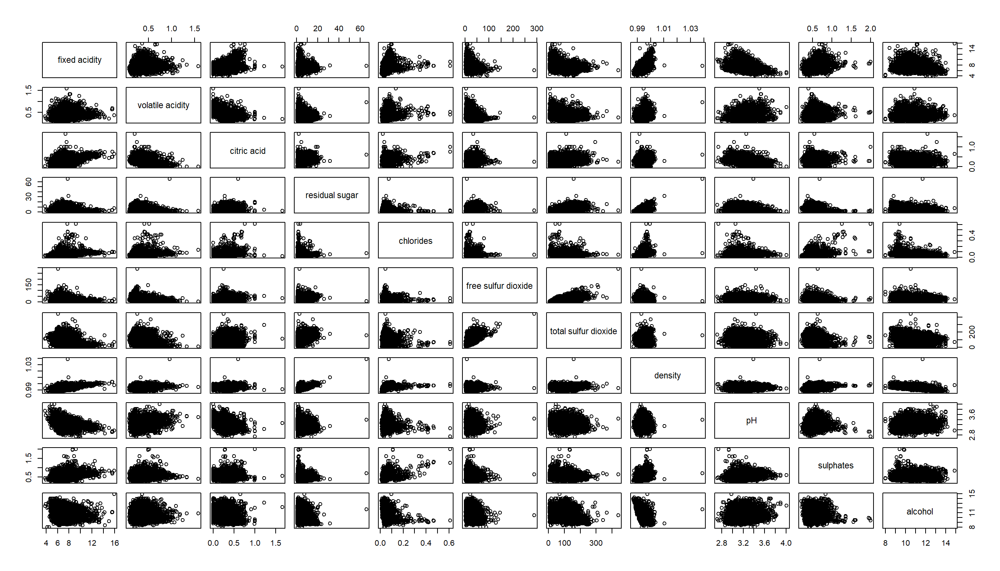
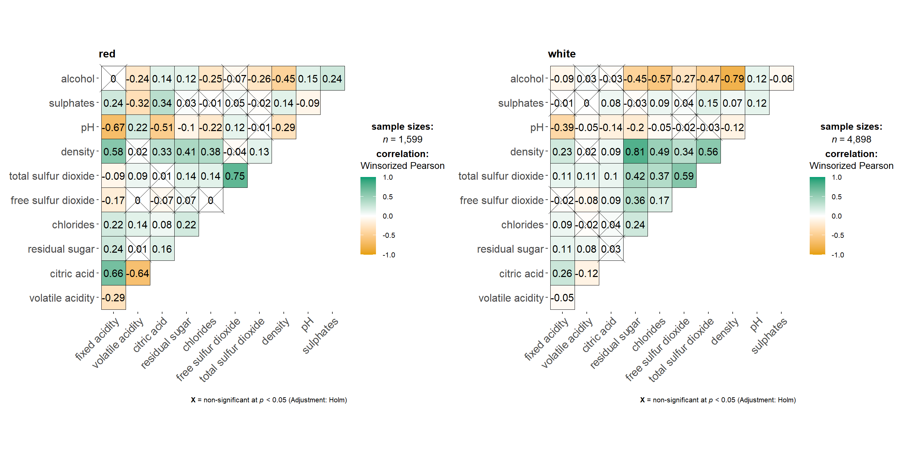
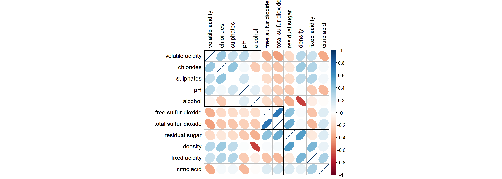
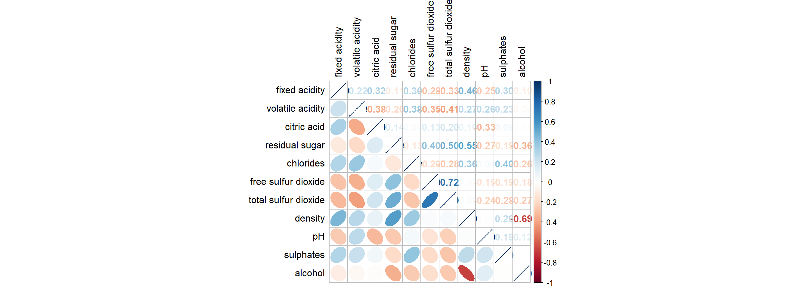
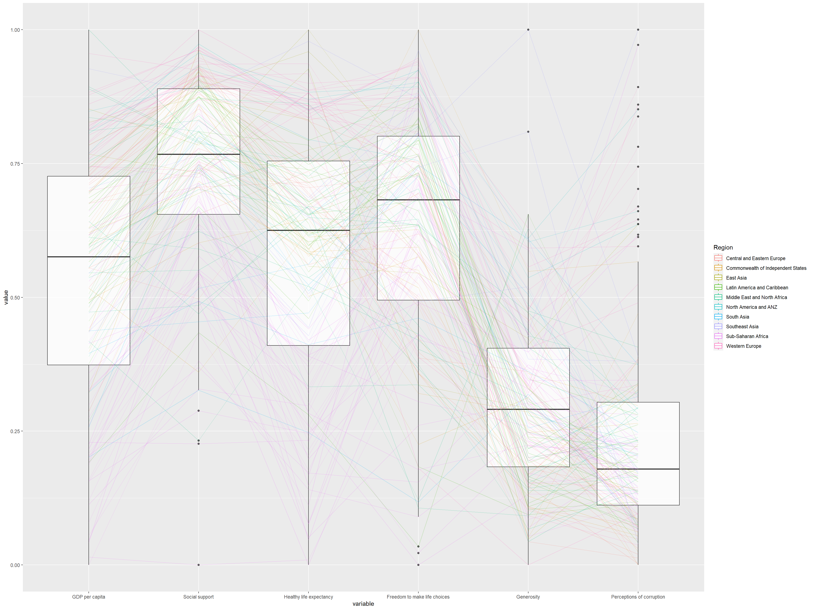

pacman::p_load(GGally, parallelPlot, seriation, dendextend, heatmaply, ggtern, plotly, corrplot, ggstatsplot, tidyverse)Inclass_Ex05
Import Library
Load Data
wine <- read_csv("data/wine_quality.csv", show_col_types = FALSE)Correlation Matrix
pairs
pairs won’t support categorical data, such as ‘type’ in wine data
pairs(wine[, 1:11])
ggstatsplot::grouped_ggcorrmat(data = wine, cor.vars = 1:11, grouping.var = type, type = 'robust', p.adjust.method = "holm", plotgrid.args = list(ncol = 2))
corrplot
wine.cor <- cor(wine[,1:11])corrplot(wine.cor, order = 'hclust', method = 'ellipse', tl.pos = "lt", tl.col = "black", addrect = 3, hclust.method = "ward.D")
corrplot.mixed(wine.cor, lower = 'ellipse', upper = 'number', tl.pos = "lt", diag = 'l', tl.col = "black", addrect = 3, hclust.method = "ward.D")
ggpairs
pop_data <- read_csv("data/respopagsex2000to2018_tidy.csv", show_col_types = FALSE) agpop_mutated <- pop_data %>%
mutate(`Year` = as.character(Year))%>%
spread(AG, Population) %>%
mutate(YOUNG = rowSums(.[4:8]))%>%
mutate(ACTIVE = rowSums(.[9:16])) %>%
mutate(OLD = rowSums(.[17:21])) %>%
mutate(TOTAL = rowSums(.[22:24])) %>%
filter(Year == 2018)%>%
filter(TOTAL > 0)ggtern(data = agpop_mutated, aes(x = YOUNG, y = ACTIVE, z = OLD)) +
geom_point() +
labs(title = "Population structure, 2018") +
theme_rgbw()label <- function(txt) {
list(
text = txt,
x = 0.1, y = 1,
ax = 0, ay = 0,
xref = "paper", yref = "paper",
align = "center",
font = list(family = "serif", size = 15, color = "white"),
bgcolor = "#b3b3b3", bordercolor = "black", borderwidth = 2
)
}
axis <- function(txt) {
list(
title = txt, tickformat = ".0%", tickfont = list(size = 10)
)
}
ternaryAxes <- list(
aaxis = axis("Young"),
baxis = axis("Active"),
caxis = axis("Old")
)
plot_ly(
agpop_mutated, a = ~YOUNG, b = ~ACTIVE, c = ~OLD, color = I("black"), type = "scatterternary"
) %>%
layout(
annotations = label("Ternary Markers"),
ternaryAxes = ternaryAxes
)#heatmap
wh <- read_csv("data/WHData-2018.csv", show_col_types = FALSE)put country name into row name rather than row number
row.names(wh) <- wh$Countrycreate a matrix form with columns 3, 7-12.
wh1 <- dplyr::select(wh, c(3, 7:12))
wh_matrix <- data.matrix(wh)plot heatmap by excluding columns 1,2,4,5
heatmaply(normalize(wh_matrix[, -c(1, 2, 4, 5)]), plot_method = "plotly",
colors = Blues,
k_row = 10,
margins = c(NA,200,60,NA),)ggparcoord(data = wh,
columns = c(7:12),
groupColumn = 2,
scale = "uniminmax",
alphaLines = 0.2,
boxplot = TRUE)
histoVisibility <- rep(TRUE, ncol(wh))
parallelPlot(wh,
rotateTitle = TRUE,
histoVisibility = histoVisibility)